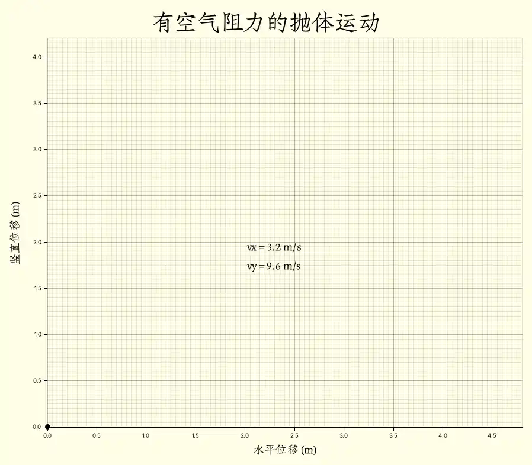
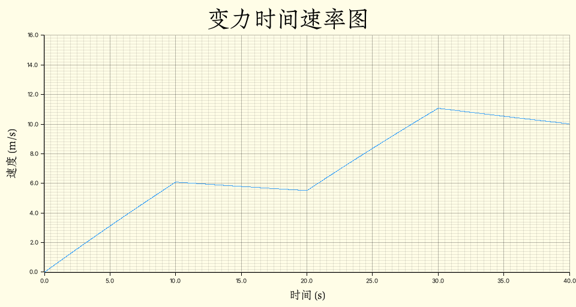

Phyrs - 0x02
archive time: 2025-07-11
RMatrix 真好用
虽然很多情况下，我们会把问题限制在一个平面内，甚至限制到一维情况， 但更多的运动发生在三维空间，所以还是需要引入向量和矩阵
描述三维运动
类似一维运动，三维运动也有位移，速度以及加速度，只是从一个标量变成了向量形式：
\begin{gathered}
\vec{r} = \left(x, y, z\right) = x \hat{i} + y \hat{j} + z \hat{k} \\
\vec{v} = \left(v_x, v_y, v_z\right),\quad\vec{a} = \left(a_x, a_y, a_z\right)
\end{gathered}
其中 $\hat{i}$，$\hat{j}$ 和 $\hat{k}$ 分别为 x 轴，y 轴 和 z 轴对应的单位向量，
并且对于 $\vec{r}$ 和 $\vec{v}$，有：
\vec{v} = \dfrac{\mathrm{d} \vec{r}}{\mathrm{d} t}
= \left(\dfrac{\mathrm{d} x}{\mathrm{d} t},
\dfrac{\mathrm{d} y}{\mathrm{d} t},
\dfrac{\mathrm{d} z}{\mathrm{d} t}\right)
= \left(v_x, v_y, v_z\right)
$\vec{v}$ 与 $\vec{a}$ 同理，我们可以写出对应的向量求导方法：
pub fn derivative_vec<'a, R: RealFloat + 'a, const E: usize>(
f: Rc<dyn Fn(R) -> VectorC<R, E>>,
dx: R,
) -> Rc<dyn Fn(R) -> VectorC<R, E> + 'a> {
Rc::new(move |x: R| -> VectorC<R, E> {
let hdx = dx.clone() * R::half();
(f(x.clone() + hdx.clone()) - f(x - hdx)) / dx.clone()
})
}注意，我使用的是 rmatrix_ks 的
1.x版本
加速度分量
在研究运动的时候还需要考虑加速度和速度的方向问题，一般可以将加速度分成两个分量，
即法向加速度 $\vec{a}_\bot$ 和切向加速度 $\vec{a}_\parallel$：
\begin{gathered}
\vec{a} = \vec{a}_\bot + \vec{a}_\parallel \\\\
\vec{a}_\bot \cdot \vec{a}_\parallel = 0,
\quad\hat{a}_\parallel = \hat{v} \\\\
\vec{a}_\parallel = \operatorname{Proj}_{\hat{v}} \vec{a},
\quad\vec{a}_\bot = \vec{a} - \vec{a}_\parallel
\end{gathered}
其中 $\hat{v}$ 表示 $\vec{v}$ 方向上的单位向量，$\operatorname{Proj}$ 表示向量投影操作，即：
\operatorname{Proj}_{\vec{\alpha}} \vec{\beta}
= \left(\vec{\beta} \cdot \hat{\alpha}\right) \hat{\alpha},
\quad\hat{\alpha} = \dfrac{\vec{\alpha}}{\lVert\vec{\alpha}\rVert}
在 Rust 中可以使用如下方式实现：
pub fn parallel_acceleration<R: RealFloat, const E: usize>(
acceleration: VectorC<R, E>,
velocity: VectorC<R, E>,
) -> VectorC<R, E> {
project_to(&acceleration, &velocity)
}
pub fn perpendicular_acceleration<R: RealFloat, const E: usize>(
acceleration: VectorC<R, E>,
velocity: VectorC<R, E>,
) -> VectorC<R, E> {
acceleration.clone() - parallel_acceleration(acceleration, velocity)
}切向加速度表示速度大小变化快慢，法向加速度表示速度方向的变化：
\begin{aligned}
\dfrac{\mathrm{d} v}{\mathrm{d} t}
&= \dfrac{\mathrm{d}}{\mathrm{d} t} \sqrt{\vec{v} \cdot \vec{v}}
= \dfrac{1}{2} \left(\vec{v} \cdot \vec{v}\right)^{-1/2}
\dfrac{\mathrm{d}}{\mathrm{d} t}\left(\vec{v} \cdot \vec{v}\right) \\
&= \dfrac{1}{2 v} \dfrac{\mathrm{d}}{\mathrm{d} t}\left(v_x^2 + v_y^2 + v_z^2\right) \\
&= \dfrac{1}{2 v}\left(2 v_x a_x + 2 v_y a_y + 2 v_z a_z \right) \\
&= \vec{a} \cdot \dfrac{\vec{v}}{v} = \vec{a} \cdot \hat{v} = a_\parallel
\end{aligned}
其中 $v = \lVert\vec{v}\rVert$，$a_\parallel = \lVert\vec{a}_\parallel\rVert$
曲率半径
如果物体的法向加速度 $\vec{a}_\bot \neq \vec{0}$，那么物体将做曲线运动，
其每一时刻的运动轨迹会有一个圆与之对应，这个圆的半径被称为曲率半径，
可以用如下公式表示：
\begin{gathered}
(v \Delta t)^2 + (R - \dfrac{1}{2} a_\bot \Delta t^2)^2 = R^2\\
R = \lim_{\Delta t \to 0} \dfrac{v^2 \Delta t^2 - \dfrac{1}{4} a_\bot^2 \Delta t^4}{a_\bot \Delta t^2}
= \dfrac{v^2}{a_\bot}
\end{gathered}
使用 Rust 可以表示为：
pub fn radius_of_curvature<R: RealFloat, const E: usize>(
velocity: &VectorC<R, E>,
acceleration: &VectorC<R, E>,
) -> R {
euclidean_norm(velocity).power(R::one() + R::one()) // R 不能直接获取 2.0
/ euclidean_norm(&perpendicular_acceleration(velocity, acceleration))
}抛体运动
抛体运动是一种常见的运动形式，按照抛出物体的角度，可以分为平抛，斜抛以及上抛
这里假设重力加速度 $g = \pi^2$，重力一般表示为 $G = m g$，其中 $m$ 是物体质量
其实重力是地球对于地表物体的引力以及离心力1的合力，但大部分情况下可以忽略离心力
一般而言，对于抛体运动，物体只考虑重力以及空气阻力：
\begin{gathered}
\vec{F}_{\textnormal{total}} = \vec{G} + \vec{f} \\
\vec{G} = m \vec{g},\quad\vec{f} = -\alpha v \hat{v}
\end{gathered}
其中 $\vec{f}$ 是通常低速的空气阻力的表达式，
$\alpha$ 表示空气阻力系数，$\alpha \gt 0$
所以抛体运动中物体随时间的位移函数为：
\vec{r} = \vec{r}_0 + \vec{v}_0 t
+ \dfrac{1}{2} \dfrac{\vec{F}_{\textnormal{total}}}{m} t^2
如果忽略空气阻力，则有：
\begin{gathered}
\vec{r} = \vec{r}_0 + \vec{v}_0 t + \dfrac{1}{2} \vec{g} t^2 \\
\vec{v} = \vec{v}_0 + \vec{g} t,\quad\vec{a} = \vec{g}
\end{gathered}
以物体起点为原点建立直角坐标系，y 轴对应物体高度，x 轴对应物体抛出水平距离，
假设抛出速度大小为 $v_x = 3.2 \,\mathrm{m/s}$，$v_y = 9.6 \,\mathrm{m/s}$，
设空气阻力系数 $\alpha = 0.5$，则物体的运动轨迹图为：

牛顿定律
牛顿定律2虽然在高速宏观或微观下有缺陷，但是足以解决日常生活中的一些问题
牛顿第一定律描述了物体运动和受力的关系，即如果没有外力，物体将保持原有的运动状态
这说明力的作用对于物体而言就是改变运动状态， 或者说如果一个物体的运动状态有所改变，那么这个物体一定受力
牛顿第二定律
牛顿第二定律定量描述了物体运动改变与受力的关系，是牛顿三定律中最为重要的定律
牛顿第二定律使用公式可以表示为：
\vec{F}_{\textnormal{total}} = \dfrac{\mathrm{d}\vec{p}}{\mathrm{d} t},
\quad\vec{p} = m \vec{v}
其中 $\vec{p}$ 是物体的动量，或者可以写为 $\vec{F} = m \vec{a}$
根据合外力的依赖，我们需要选择不同的方法去求解方程：
| 合外力的依赖 | 求解方法 |
|---|---|
| 无 | 简单代数 |
| 时间 | 积分 |
| 速度 | 一阶微分方程 |
| 时间和速度 | 一阶微分方程 |
| 时间、位置以及速度 | 二阶微分方程 |
对于恒力，即力不依赖于任何其他变量，
物体的速度可以简单表示为 $\vec{v} = \vec{v}_0 + \vec{F} t / m$，
如果力依赖于时间，那么加速度也将依赖于时间，
此时速度不能简单地使用 $\vec{v} = \vec{v}_0 + \vec{a} t$ 表示，而是：
\vec{v} = \vec{v}_0 + \int{\vec{a}} \mathrm{d} t
= \vec{v}_0 + \dfrac{1}{m} \int{\vec{F}} \mathrm{d} t
例如，对于一个自行车，人和车总重 $50 \,\mathrm{kg}$，忽略其他阻力，其受力可以表示为：
F(t) = \begin{cases}
32 \,\mathrm{N}
&(20 \,\mathrm{s}) n \le t \lt (20 \,\mathrm{s}) n + 10 \,\mathrm{s},
\,n\in \mathbb{N} \\
0 \,\mathrm{N} &\textnormal{otherwise}
\end{cases}
那么使用 Rust 可以表示为：
use std::rc::Rc;
use plotters::{
chart::ChartBuilder,
prelude::{BitMapBackend, IntoDrawingArea},
series::LineSeries,
style::full_palette::{BLUE_400, YELLOW_50},
};
use rmatrix_ks::number::{
instances::{double::Double, int::Int},
traits::{integral::Integral, realfrac::RealFrac, zero::Zero},
};
fn main() {
run().unwrap()
}
#[derive(Clone)]
struct State {
pub mass: Double,
pub pos: Double,
pub vel: Double,
pub time: Double,
}
fn run() -> Option<()> {
let force = Rc::new(|t: Double| -> Double {
if (t / Double::of(10.0))
.truncate::<Int>()
.modulus(Int::of(2))
.is_zero()
{
Double::of(32.0)
} else {
Double::zero()
}
});
// 初始状态
let mut current_s = State {
mass: Double::of(50.0),
pos: Double::zero(),
vel: Double::zero(),
time: Double::zero(),
};
// 状态变更
let one_step = Rc::new(|s: State, dt: Double| {
let acc = force(s.time.clone()) / s.mass.clone();
let new_vel = s.vel + acc.clone() * dt.clone();
let new_pos = s.pos + new_vel.clone() * dt.clone();
State {
mass: s.mass,
pos: new_pos,
vel: new_vel,
time: s.time + dt,
}
});
let mut states = Vec::new();
let time_duration = Double::of(0.015625);
// 模拟运动
while current_s.time < Double::of(40.0) {
states.push(current_s.clone());
current_s = one_step(current_s, time_duration.clone());
}
// 绘图
let draw_area = BitMapBackend::new("result/draw_bike.png", (960, 512)).into_drawing_area();
draw_area.fill(&YELLOW_50).ok()?;
let mut chart = ChartBuilder::on(&draw_area)
.margin(16)
.caption(
"变力时间位移图",
("Zhuque Fangsong (technical preview)", 48),
)
.x_label_area_size(48)
.y_label_area_size(64)
.build_cartesian_2d(0.0..40.0, 0.0..360.0)
.ok()?;
chart
.configure_mesh()
.axis_desc_style(("Zhuque Fangsong (technical preview)", 24))
.x_desc("时间 (s)")
.y_desc("位移 (m)")
.draw()
.ok()?;
chart
.draw_series(LineSeries::new(
states.iter().map(|s| (s.time.raw(), s.pos.raw())),
&BLUE_400,
))
.ok()?;
draw_area.present().ok()?;
Some(())
}可以得到前 $40 \,\mathrm{s}$ 的运动图像：

注意到这里并没有使用积分去获取对应的位移函数，而是使用状态的方法去记录运动变化
如果通过位移函数计算，由于这里要绘制图像而不是计算某一时刻的位移，
在 integral_real 部分会有大量的重复计算，而使用状态可以缓存计算结果，减少计算次数
空气阻力
在 抛体运动 中，我们见到了依赖速度的力，即空气阻力
对于这种力，我们同样可以使用状态的方法来计算对应时间的物体状态：
let mut p3d = Particle {
mass: Double::of(2.0),
position: VectorC::of(&[0.0, 0.0, 0.0].map(Double::of))?,
velocity: VectorC::of(&[0.0, 8.0, 32.0].map(Double::of))?,
};
// f_a = - a v + m g
let total_force = move |a: Double| {
|p: Particle<Double, 3>, dt: Double| -> Particle<Double, 3> {
let current_f = p.velocity.clone() * (-a);
let current_a = current_f / p.mass.clone()
+ VectorC::<Double, 3>::of(&[
Double::zero(),
Double::zero(),
-Double::PI.power(Double::of(2.0)),
])
.expect("Error[f]: cannot construct gravity acceleration");
let current_v = p.velocity + current_a * dt.clone();
let current_p = p.position + current_v.clone() * dt;
Particle {
mass: p.mass,
position: current_p,
velocity: current_v,
}
}
};
let mut states = Vec::new();
let mut current_time = Double::of(0.0);
let time_duration = Double::of(0.015625);
let a = 0.5;
while p3d.position[(3, 1)] >= Double::of(0.0) {
states.push((current_time.clone(), p3d.clone()));
p3d = total_force(Double::of(a))(p3d, time_duration.clone());
current_time = current_time + time_duration.clone();
}其中 Particle 的定义如下：
#[derive(Clone)]
pub struct Particle<R: RealFloat, const E: usize> {
pub mass: R,
pub position: VectorC<R, E>,
pub velocity: VectorC<R, E>,
}这种使用状态迭代的方法称为欧拉法3，是一种常用的求解微分方程的方法
物理系统的状态
使用欧拉法需要对当前的物理系统的状态进行建模，即 State 或 Particle
对系统的状态描述具体需要哪些物理量是由研究的问题决定的
具体而言，确定系统状态可以分为以下三步：
- 粗略判断需要哪些物理量
- 观察系统中有哪些物理量随时间变化
- 这些物理量的初始状态是什么
第一步结合第二步就可以确定我们的状态要包含哪些物理量， 第三步则是为欧拉法做准备
随时间和速度变化的力
基于 牛顿第二定律 的例子，如果开始考虑空气阻力， 那么此时的合力就是一个随时间和速度变化的力，可以使用欧拉法分析
$$ F_{\textnormal{total}} = F(t) + f $$
对应 Rust 实现如下：
// 状态变更
let one_step = Rc::new(|s: State, dt: Double| {
// acc = (F + f) / m = (F - 0.5 v) / m
let acc = (force(s.time.clone()) - s.vel.clone() * Double::of(0.5)) / s.mass.clone();
let new_vel = s.vel + acc.clone() * dt.clone();
let new_pos = s.pos + new_vel.clone() * dt.clone();
State {
mass: s.mass,
pos: new_pos,
vel: new_vel,
time: s.time + dt,
}
});可以看到，根据研究问题的不同，所要使用的方法和细节也不一样，根据需要灵活挑选合适的方法
-
Centrifugal force.Wikipedia [DB/OL].(2025-07-10)[2025-07-11]. https://en.wikipedia.org/wiki/Centrifugal_force ↩
-
Newton’s laws of motion.Wikipedia [DB/OL].(2025-07-07)[2025-07-11]. https://en.wikipedia.org/wiki/Newton's_laws_of_motion ↩
-
Euler method.Wikipedia [DB/OL].(2025-06-04)[2025-07-11]. https://en.wikipedia.org/wiki/Euler_method ↩